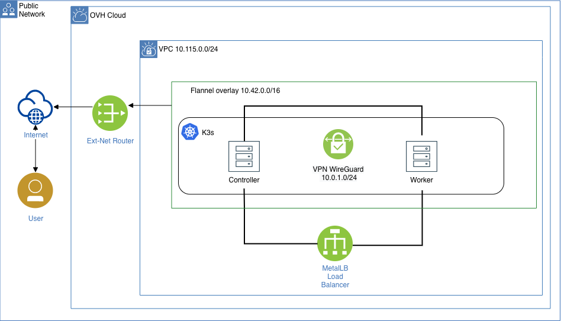

Infrastructure Architecture¶
Terraform Infrastructure Overview¶

A set of terraform modules deploy a secure, functional k3s cluster on OVH.
Why not Kubespray?¶
Deployment follows the hobby-kube guidelines for setting up a secure Kubernetes cluster.
Following cloud-native projects are installed as a part of deployment:
Dependencies¶
The following is required to be installed on your system:
- terraform
- jq
- kubectl
Deployment¶
Clone the repository:
$ git clone git@github.com:netguru-interview/terraform-k3s.git
Copy example.tfvars to terraform.tfvars
$ cp example.tfvars terraform.tfvars
Using your favourite editor, update values in terraform.tfvars marked required:
$ vim terraform.tfvars
# DNS Settings
create_zone = "true"
domain = "kloud-native.com"
digitalocean_token = <required>
Run terraform init to initalize modules:
$ terraform init
Run terraform plan to view changes terraform will make:
$ terraform apply
Run terraform apply to create your resources:
$ terraform apply --auto-approve
Set KUBECONFIG:
eval $(terraform output kubeconfig)
Check resources kubectl get po -A -o wide
NAMESPACE NAME READY STATUS RESTARTS AGE
kube-system pod/kube-flannel-ds-amd64-w6qx9 1/1 Running 0 16h
kube-system pod/metrics-server-7566d596c8-xj86w 1/1 Running 0 16h
kube-system pod/coredns-7944c66d8d-qnvcj 1/1 Running 0 16h
kube-system pod/local-path-provisioner-6d59f47c7-s4pl6 1/1 Running 0 16h
kube-system pod/kube-flannel-ds-amd64-n6vks 1/1 Running 0 16h
cert-manager pod/cert-manager-cainjector-678b44fb8c-9mf9h 1/1 Running 0 16h
cert-manager pod/cert-manager-65b665b74d-8bjkg 1/1 Running 0 16h
cert-manager pod/cert-manager-webhook-57d5ffc9cb-j8cbx 1/1 Running 0 16h
default pod/traefik-cb68d6bf5-nlhzr 1/1 Running 0 16h
argocd pod/latest-argocd-redis-654b77c6cd-g6ffw 1/1 Running 0 16h
metallb-system pod/controller-7694dcd576-kbqbq 1/1 Running 0 16h
metallb-system pod/speaker-gjbpz 1/1 Running 0 16h
metallb-system pod/speaker-gf7tv 1/1 Running 0 16h
argocd pod/latest-argocd-application-controller-5b99488c78-hxpsq 1/1 Running 0 16h
argocd pod/latest-argocd-dex-server-9c65dfd7-brvvt 1/1 Running 3 16h
argocd pod/latest-argocd-server-575d57c745-gv5w9 1/1 Running 0 16h
argocd pod/latest-argocd-repo-server-54d5499fc6-8wrvs 1/1 Running 0 16h
NAMESPACE NAME TYPE CLUSTER-IP EXTERNAL-IP PORT(S) AGE
default service/kubernetes ClusterIP 10.43.0.1 <none> 443/TCP 16h
kube-system service/kube-dns ClusterIP 10.43.0.10 <none> 53/UDP,53/TCP,9153/TCP 16h
kube-system service/metrics-server ClusterIP 10.43.247.198 <none> 443/TCP 16h
cert-manager service/cert-manager ClusterIP 10.43.236.173 <none> 9402/TCP 16h
cert-manager service/cert-manager-webhook ClusterIP 10.43.208.42 <none> 443/TCP 16h
argocd service/latest-argocd-redis ClusterIP 10.43.45.175 <none> 6379/TCP 16h
argocd service/latest-argocd-dex-server ClusterIP 10.43.2.73 <none> 5556/TCP,5557/TCP 16h
argocd service/latest-argocd-server ClusterIP 10.43.230.232 <none> 80/TCP,443/TCP 16h
argocd service/latest-argocd-repo-server ClusterIP 10.43.197.228 <none> 8081/TCP 16h
argocd service/latest-argocd-application-controller ClusterIP 10.43.161.54 <none> 8082/TCP 16h
default service/traefik LoadBalancer 10.43.66.104 <redacted> 80:31722/TCP,443:30011/TCP 16h
NAMESPACE NAME DESIRED CURRENT READY UP-TO-DATE AVAILABLE NODE SELECTOR AGE
kube-system daemonset.apps/kube-flannel-ds-amd64 2 2 2 2 2 <none> 16h
metallb-system daemonset.apps/speaker 2 2 2 2 2 beta.kubernetes.io/os=linux 16h
NAMESPACE NAME READY UP-TO-DATE AVAILABLE AGE
kube-system deployment.apps/metrics-server 1/1 1 1 16h
kube-system deployment.apps/coredns 1/1 1 1 16h
kube-system deployment.apps/local-path-provisioner 1/1 1 1 16h
cert-manager deployment.apps/cert-manager-cainjector 1/1 1 1 16h
cert-manager deployment.apps/cert-manager 1/1 1 1 16h
cert-manager deployment.apps/cert-manager-webhook 1/1 1 1 16h
default deployment.apps/traefik 1/1 1 1 16h
argocd deployment.apps/latest-argocd-redis 1/1 1 1 16h
metallb-system deployment.apps/controller 1/1 1 1 16h
argocd deployment.apps/latest-argocd-application-controller 1/1 1 1 16h
argocd deployment.apps/latest-argocd-dex-server 1/1 1 1 16h
argocd deployment.apps/latest-argocd-server 1/1 1 1 16h
argocd deployment.apps/latest-argocd-repo-server 1/1 1 1 16h
NAMESPACE NAME DESIRED CURRENT READY AGE
kube-system replicaset.apps/metrics-server-7566d596c8 1 1 1 16h
kube-system replicaset.apps/coredns-7944c66d8d 1 1 1 16h
kube-system replicaset.apps/local-path-provisioner-6d59f47c7 1 1 1 16h
cert-manager replicaset.apps/cert-manager-cainjector-678b44fb8c 1 1 1 16h
cert-manager replicaset.apps/cert-manager-65b665b74d 1 1 1 16h
cert-manager replicaset.apps/cert-manager-webhook-57d5ffc9cb 1 1 1 16h
default replicaset.apps/traefik-cb68d6bf5 1 1 1 16h
argocd replicaset.apps/latest-argocd-redis-654b77c6cd 1 1 1 16h
metallb-system replicaset.apps/controller-7694dcd576 1 1 1 16h
argocd replicaset.apps/latest-argocd-application-controller-5b99488c78 1 1 1 16h
argocd replicaset.apps/latest-argocd-dex-server-9c65dfd7 1 1 1 16h
argocd replicaset.apps/latest-argocd-server-575d57c745 1 1 1 16h
argocd replicaset.apps/latest-argocd-repo-server-54d5499fc6 1 1 1 16h
SSH to master with eval $(terraform output ssh-master):
eval $(terraform output ssh-master)